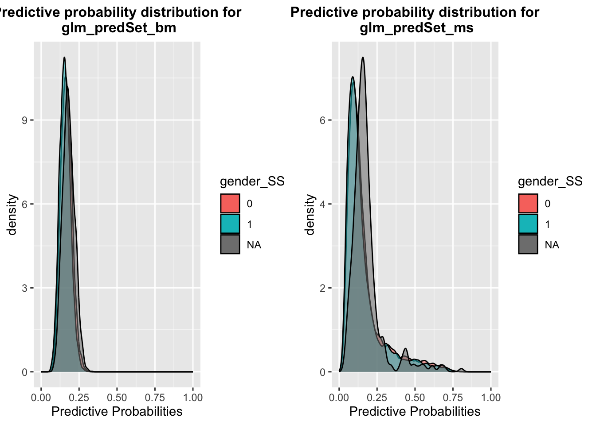
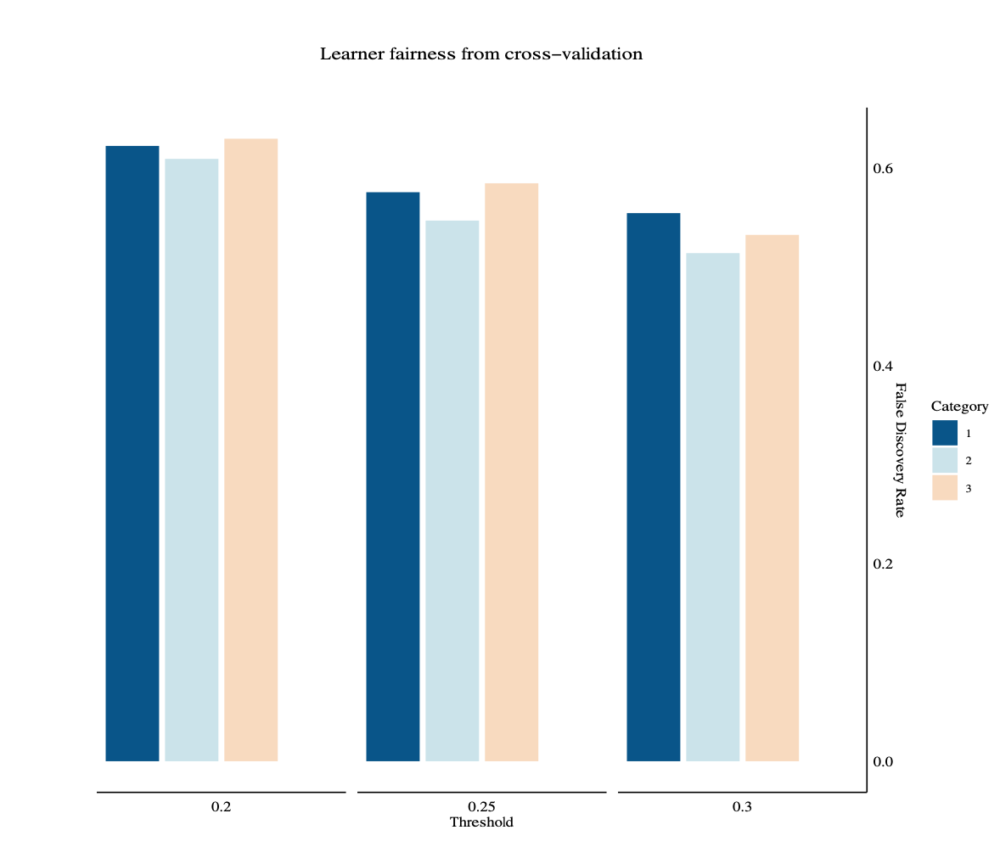
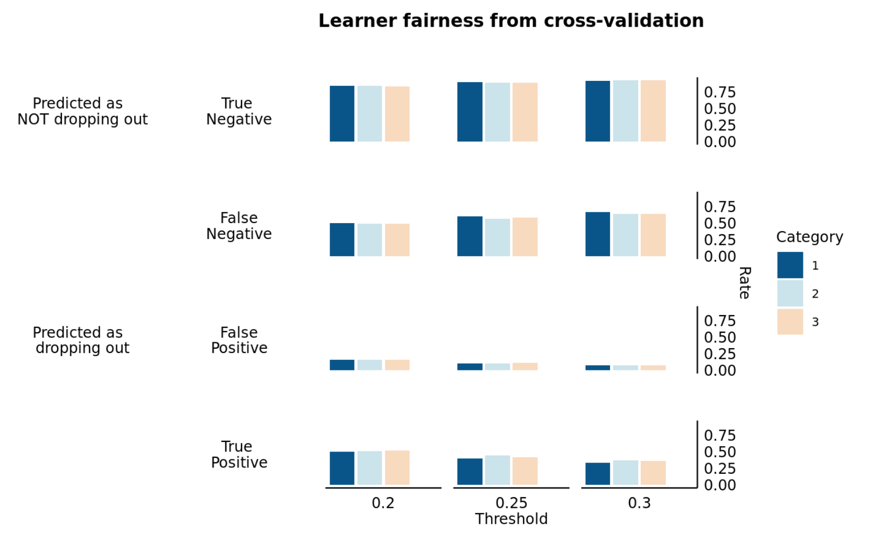
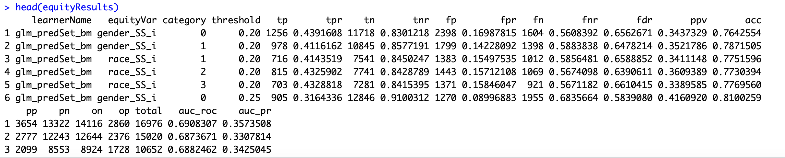
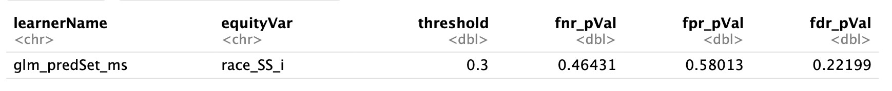

Assessing bias in the code templates
Step 4 in 02_Learner_Training_and_Validation.Rmd guides users in comparing bias across learners. The first chunk in this section (plotpredProbsFairness1), which is displayed below, plots distributions of predicted probabilities by category (e.g. by race). The user can specify for which attribute (equityVarSelect) which learners (learnersSelect) these plots should be displayed. The code can be repeated to view the plots for another attribute.
#-------------------------#
equityVarSelect <- "gender_SS" # limit to one
learnerNamesSelect <- c("glm_predSet_bm","glm_predSet_ms") # multiple allowed
#-------------------------#
probsGraphs <- NULL
for(i in 1:length(learnerNamesSelect))
{
probsGraphs[[i]] <-
pred_prob_graph(
predProbs = learnersResults$predProbs,
learnerName = learnerNamesSelect[i],
splitCategory = equityVarSelect
)
}
ggarrange(plotlist = probsGraphs)As previously mentioned, while presenting stakeholders with the distributions of predicted likelihoods for various groups is crucial, disentangling the degree to which divergent distributions of risk scores are attributable to bias is challenging. In this context, different distributions of predicted probabilities of dropout for students of different races might be a manifestation of bias stemming from racial discrimination within the educational environment. However, they could also be explained by disparate trends in academic performance and student behavior, which are often rooted in socioeconomic factors that are correlated with race.
The next code chunk (thresEquityPlot1), displayed below, allows the user to compare threshold-based performance metrics across categories for (i) a single specified attribute (equityVarSelect), (ii) a specified learner (learnerNameSelect), and (iii) up to four different thresholds (selectedThresholds, which was specified above in the chunk titled thresRange).
The choices for metrics (passed in to metricType) are: - true positive rate (tpr) or count (tpc) - false positive rate (fpr) or count (fpc) - true negateive rate (tnr) or count (tnc) - false negative rate (fnr) or count (fnc)
The user can simultaneously view the all of the above rates by specifying “rate” for metricType or simultaneously view all of the above counts above by specifying “count” for metricType.
The user can specify positive predictive value (ppv), or precision, for the “false discover rate” (fdr). The false discovery rate is the number of false positives over the number of predicted positives. The false discovery rate is generally considered less strict than the false positive rate. We may be willing to accept more false positives when the learner has a large number of predicted positives, while the false positive rate does not take into account the number of predicted positives. We ask: Among people who were not offered services, what are the chances they actually needed services given their race? If we have parity, it means that among people who were not offered services, the chances that a white or Black person needed the services is equal. This metric may be easier to achieve equity on if Black and white people have different rates of needing services.
#-------------------------#
equityVarSelect <- "race_SS"
learnerNameSelect <- "glm_predSet_ms"
outcomeDescription <- c("Predicted as \n NOT dropping out", "Predicted as \n dropping out")
# Insert the title of the graph
graphTitle <- "Learner fairness from cross-validation"
metricType <- "fdr"
#-------------------------#
selectedMetrics <- get_selectedMetrics(metricType)
# subset down to just that learner
learnerPredProbs <- learnersResults$predProbs %>%
filter(learnerName == learnerNameSelect)
learnerMetricsThresEquity <- conf_metrics_thres_learner(
predProbs = learnerPredProbs,
outcomeName = learnerSpec$outcomeName,
thresSeq = seq(0.0, 1.00, 0.05), # Do not change. Fixed by Notebook.
equityVar = equityVarSelect
)
learnerMetricsThresEquityLong <-
learnerMetricsThresEquity %>%
dplyr::mutate(thresholdC = as.character(threshold)) %>%
dplyr::filter(threshold %in% as.character(selectedThresholds)) %>%
dplyr::select(learnerName, threshold, all_of(equityVarSelect), !!selectedMetrics) %>%
tidyr::pivot_longer(-c(learnerName, threshold, all_of(equityVarSelect)),
names_to = "metricType",
values_to = "value" ) %>%
dplyr::mutate(threshold = as.factor(threshold))
p <- conf_mat_bar_plot(plotData = learnerMetricsThresEquityLong,
equityVar = equityVarSelect,
metricType = metricType,
outcomeDescription = outcomeDescription,
graphTitle = graphTitle)
print(p)This code chunk will return the following plot when “fdr” is specified for metricType.

The same code chunk will return the following plot when “rate” is specified for metricType.

The next code chunk (thresSelect) computes a more comprehensive set of performance metrics - for all possible combinations of (1) category of each selected equity attribute; (2) learner; (3) a set of thresholds specified by the user. The code chunk is displayed below, followed by a subset of the data.frame that is returned.
#-------------------------#
thresholdsSelect <- selectedThresholds # default is same as selected above, or this can be edited to specify a different set of thresholds
#-------------------------#
equityResults <- calc_equity_metrics_all(
predProbs = learnersResults$predProbs,
learnerNames = learnerNames,
thresholdsSelect = thresholdsSelect,
equityVars = learnerSpec$equityVars,
outcomeName = learnerSpec$outcomeName
)
And then the next code chunk (fairnessDiffExploration) helps the user output from the previous chunk so that differential metrics can be assessed. The user specifies which learner(s) to narrow results to (learnerSelect), which attribute(s) (equityVarsSelect) and which thresholds (thresholdsSelect).
#-------------------------#
learnersSelect <- "glm_predSet_ms"
equityVarsSelect <- "race_SS_i"
thresholdsSelect <- selectedThresholds
#-------------------------#
equityResultsSubset <- equityResults %>%
filter(learnerName %in% learnersSelect) %>%
filter(equityVar %in% equityVarsSelect) %>%
filter(threshold %in% thresholdsSelect)
equityResultsSubsetRound <- round_table(equityResultsSubset) %>%
rename(learner = learnerName, var = equityVar, cat = category, thres = threshold)
print(equityResultsSubsetRound)Finally, it’s crucial to remember that, like any statistical estimate, performance metric estimates carry inherent statistical uncertainty. Consequently, observed differences among various groups (e.g., different races) might result from noise attributed to sampling variability. Hence, determining the statistical significance of these differences is essential to validate the observations. The final code chunk in Step 4 of 02_Learner_Training.Rmd provides p-values for the null hypothesis that the metrics are the same for all categories of the selected attribute.
Currently, this chunk only carries out statistical tests for three metrics: fnr, fpr, or fdr.
#-------------------------#
learnersSelect <- learnersSelect
equityVarsSelect <- equityVarsSelect
thresholdsSelect <- 0.3
#-------------------------#
equityTests <- calc_equity_tests_all(
learnersSelect,
equityVarsSelect,
thresholdsSelect
)
print(round_table(equityTests))The output from this chunk looks like this:

Back to top